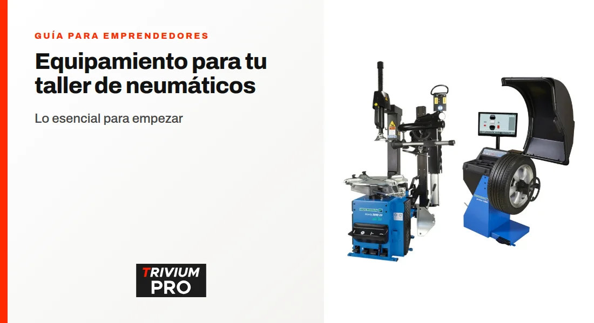

Si estás pensando en abrir tu propia gomería, es fundamental contar con el equipamiento adecuado para ofrecer un servicio eficiente y seguro. Invertir en las herramientas correctas no solo mejorará tu capacidad de trabajo, sino que también garantizará la satisfacción de tus clientes. A continuación, te presentamos una guía sobre el equipamiento imprescindible para arrancar con éxito.
1. Desarmadoras de neumáticos
Una de las primeras máquinas que vas a necesitar es una desarmadora de neumáticos. Este equipo te permite desmontar los neumáticos de las llantas sin dañarlos. Es fundamental elegir una desarmadora que sea fácil de usar, eficiente y que pueda manejar diferentes tamaños de ruedas, desde vehículos pequeños hasta grandes camiones. Ver desarmadoras.
2. Balanceadoras de ruedas
Para ofrecer un servicio integral, es crucial contar con una balanceadora de ruedas. Este equipo asegura que los neumáticos estén equilibrados correctamente, lo que previene el desgaste desigual y mejora la experiencia de manejo. Un neumático bien balanceado también optimiza el consumo de combustible, algo muy valorado por los clientes. Ver balanceadoras.
3. Compresores de aire
Los compresores de aire son una herramienta básica en cualquier taller de neumáticos. Los vas a necesitar para inflar neumáticos, operar herramientas neumáticas y realizar una variedad de tareas esenciales. Asegurate de adquirir uno con la capacidad adecuada para el volumen de trabajo que esperás en tu taller.
4. Llaves de impacto neumáticas
Para realizar cambios de neumáticos rápidos y eficientes, las llaves de impacto neumáticas son indispensables. Estas herramientas te permiten aflojar y apretar las tuercas de las ruedas de manera rápida y sin esfuerzo. Además, son útiles para muchas otras tareas dentro del taller. Ver llaves de impacto.
5. Gatos hidráulicos y elevadores
Para facilitar el trabajo de cambio de neumáticos y realizar reparaciones, vas a necesitar gatos hidráulicos o elevadores. Los gatos de piso te permiten levantar un vehículo de manera rápida, mientras que los elevadores de dos o cuatro columnas son más robustos y permiten un acceso total a la parte inferior del coche.
6. Herramientas de alineación de ruedas
Ofrecer servicios de alineación es una excelente manera de incrementar tus ingresos. La alineación de ruedas no solo mejora la experiencia de manejo de tus clientes, sino que también prolonga la vida útil de los neumáticos. Invertir en un equipo de alineación de calidad es fundamental para ofrecer este servicio de manera precisa. Ver alineadoras.
7. Medidores de presión y herramientas de inspección
Para realizar inspecciones rápidas y garantizar que los neumáticos estén en buenas condiciones, es importante contar con medidores de presión precisos y herramientas de inspección como calibradores de profundidad de banda de rodadura. Esto no solo es un buen servicio para los clientes, sino que también ayuda a prevenir accidentes.
8. Equipo de protección personal (EPP)
No podés olvidarte del equipo de protección personal. Guantes, gafas de seguridad, y calzado adecuado son esenciales para mantener la seguridad en el taller. También es recomendable contar con señalización y herramientas adecuadas para el manejo seguro de los neumáticos y las máquinas.